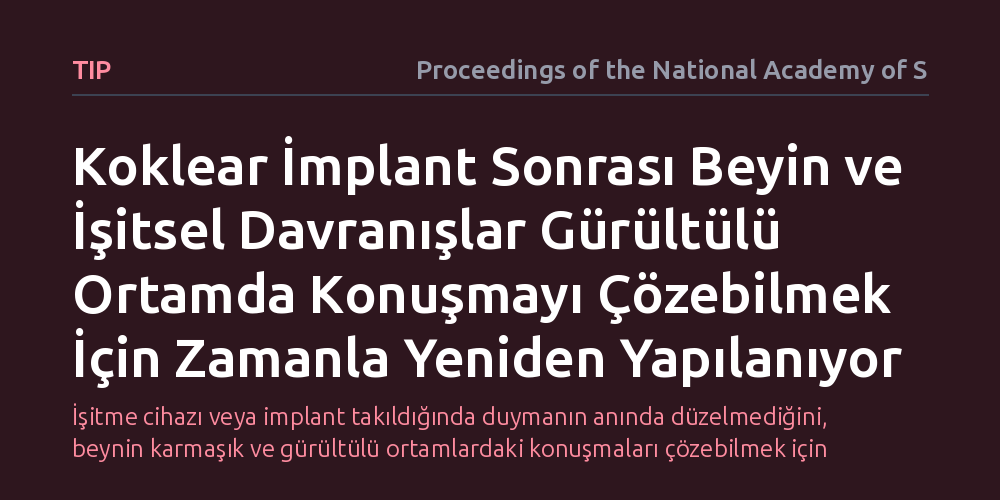

TIP · Proceedings of the National Academy of Sciences · 2026-10-14
Araştırmacılar, koklear implant takılan bireylerde işitmenin geri kazanılmasının ardından beyinsel ve davranışsal sistemlerin zaman içindeki uyum sürecini inceledi. Sonuçlar, başarılı implant kullanımının yalnızca sesleri duymakla kalmayıp beynin gürültülü ortamlarda konuşmayı takip edebilmek için zamana yayılan bir uyum geliştirdiğini gösterdi.
İşitme cihazı veya implant takıldığında duymanın anında düzelmediğini, beynin karmaşık ve gürültülü ortamlardaki konuşmaları çözebilmek için zamana yayılan biyolojik ve davranışsal bir öğrenme sürecine ihtiyaç duyduğunu gösterir.

Ağır işitme kaybı yaşayan bireyler için koklear implant, dış dünyadaki sesleri işitme sinirine elektriksel sinyaller halinde ileterek sessizliği bozan etkili bir biyomedikal teknolojidir. Ancak implant ameliyatı geçiren ve cihazı açılan bir kişinin ilk andan itibaren etrafındaki tüm konuşmaları kusursuz bir şekilde anlayabilmesi mümkün değildir. İnsan kulağı ses dalgalarını toplarken, bu sesleri anlamlı kelimelere, cümlelere ve duygusal tonlara dönüştüren asıl organ beyindir.
Özellikle kalabalık bir restoranda, sokakta veya iş yerinde olduğu gibi aynı anda birden fazla kişinin konuştuğu gürültülü ortamlarda konuşmayı takip etmek, beynin oldukça karmaşık filtreleme mekanizmalarını devreye sokmasını gerektirir. Yıllarca sessizliğe alışmış ya da bozulmuş işitsel girdiler almış bir beynin, aniden implanttan gelen yapay ve elektriksel ses sinyallerini anlamlandırabilmesi kolay bir iş değildir.
Bu nedenle araştırmacıların odaklandığı temel soru şudur: İşitme duyusu cerrahi olarak geri kazandırıldığında, beyin bu yeni sinyalleri çözebilmek için zaman içinde nasıl değişir ve günlük yaşamın gürültülü koşullarında konuşmayı takip edebilme becerisi nasıl gelişir?
Bugüne kadar yapılan pek çok araştırma, implant kullanıcılarını ameliyatın üzerinden belirli bir süre geçtikten sonra sadece tek bir anda inceleyen kesitsel yöntemlere dayanıyordu. Bu çalışma ise katılımcıları implantasyon öncesinden başlayarak ameliyat sonrasındaki kritik iyileşme evreleri boyunca adım adım takip eden boylamsal bir yaklaşımla tasarlandı. Böylece adaptasyonun anlık bir sonuç değil, zaman içinde evrilen dinamik bir süreç olduğu doğrudan gözlemlendi.
Araştırma sürecinde iki temel ölçüm kanalı bir araya getirildi. İlk olarak, katılımcıların kafa derisine yerleştirilen hassas elektrotlar (EEG) aracılığıyla beyin kabuğunun elektriksel uyarılara verdiği tepkiler haritalandı. İkinci olarak, katılımcılara arka plan gürültüsü içeren özel konuşma testleri uygulanarak, sesin fizyolojik olarak beyne ulaşmasının ötesinde, kişinin konuşulanları ne kadar doğru ayırt edebildiği davranışsal olarak ölçüldü.
Elde edilen bulgular, implantın devreye girmesiyle birlikte beynin işitsel merkezlerinde hızlı ve zamana yayılan belirgin bir yeniden yapılanma sürecinin başladığını gösterdi. Ameliyatın hemen ardından gelen dönemde beyin korteksi implanttan iletilen yapay elektriksel uyaranları başlangıçta ham ve yabancı bir sinyal olarak işlerken, aylar geçtikçe bu sinyallere verilen elektriksel tepkilerin daha düzenli, senkronize ve ayırt edici hale geldiği saptandı.
Davranışsal ölçümlerde ise katılımcıların sessiz ortamlardaki konuşmaları anlama becerisinin görece daha hızlı geliştiği, ancak arka plan gürültüsü içeren karmaşık durumlarda konuşmayı ayırt edebilme yeteneğinin çok daha uzun ve kademeli bir öğrenme sürecine dayandığı belirlendi. Dahası, beynin bu süreçte yalnızca işitsel verilerle yetinmeyip dudak hareketleri gibi görsel ipuçlarını işitsel sinyalle bütünleştirerek anlama başarısını artırdığı görüldü.
Bu sonuçlar, koklear implant tedavisinin yalnızca kulağa bir elektrot yerleştirip cihazı çalıştırmaktan ibaret olmadığını açıkça ortaya koymaktadır. Asıl işitme başarısı, beynin implanttan gelen yeni elektriksel dili öğrenme ve çevresel karmaşa içinde bu dili ayıklama kapasitesine bağlıdır. Dolayısıyla başarılı bir implantasyon, cerrahi başarının yanı sıra uzun süreli ve hedefe yönelik bir işitsel rehabilitasyon sürecini zorunlu kılmaktadır.
Bireyler arasındaki algılama farklılıklarının sadece cihazın teknik özelliklerinden değil, beyindeki sinirsel adaptasyonun hızından ve kalitesinden kaynaklandığı anlaşılmaktadır. Bu durum, gelecekte implant kullanıcılarına yönelik rehabilitasyon protokollerinin kişiselleştirilmesi ve özellikle gürültülü ortamlarda konuşma anlama egzersizlerine ağırlık verilmesi gerektiğini göstermektedir.